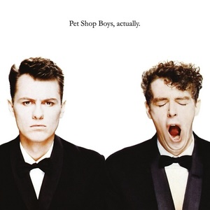

Pet Shop Boys - Actually
Following the breakout success of "West End Girls", taken from their debut album Please, the Pet Shop Boys followed up with their most well-known album, Actually. Containing two number one hits, "It's a Sin" and "Heart", the album (and particularly its cover) has come to define the band. But one of their biggest hits, released between those two I just mentioned, wasn't actually on the album. In August 1987, shortly before the release of Actually, the Pet Shop Boys performed on the TV special Love Me Tender, celebrating the work of Elvis Presley on the 10th anniversary of his death. Each artist on the show performed a cover of an Elvis number, and having watched the special myself, I can tell you that all the covers were pretty plain, by-the-books versions which would hardly impress a die-hard Elvis fan, apart from the Boys' contribution: a cover of the 70s ballad "Always on My Mind", which radically altered the original soft arrangement, in favour of that Hi-NRG distinct PSB sound. The performance was so well received that the duo decided to put the cover out as a non-album single in November of that year, and ended up having four weeks at number one as a result, including the highly coveted Christmas number one spot that year.
Unlike their previous album, the B-side situation is not complicated here. One for every single; that's it. There were four singles from the album, "It's a Sin", "What Have I Done to Deserve This?" (with Dusty Springfield), "Rent", and "Heart". And of course, "Always on My Mind" and its B-side are here as well. Because "Always on My Mind" is the only A-side here, I've put it at the start.
CD 1 continued
| No. | Title | Original release | Length |
|---|---|---|---|
| 11 | Always on My Mind | "Always on My Mind" single, 1987 | 3:56 |
| 12 | You Know Where You Went Wrong | "It's a Sin" single, 1987 | 5:51 |
| 13 | A New Life | "What Have I Done to Deserve This?" single, 1987 | 4:55 |
| 14 | I Want a Dog | "Rent" single, 1987 | 4:57 |
| 15 | Do I Have To? | "Always on My Mind" single, 1987 | 5:14 |
| 16 | I Get Excited (You Get Excited Too) | "Heart" single, 1988 | 4:53 |
| 78:38 |
And now onto the remixes. "It's a Sin" and "Heart" have a "Disco Mix" (basically an extended version), while "Always on My Mind" has an "Extended Dance Version", "What Have I Done to Deserve This?" has only an "Extended Mix", and "Rent", which isn't really designed for discos, only gets a 7" remix for the single release. Plus, "It's a Sin" B-side "You Know Where You Went Wrong" gets a "Rough Mix". Then the proper remixes: "Always on My Mind" received a remix which was made by Phil Harding, but most releases (apart from the US ones, strangely) say the Pet Shop Boys were also involved in the remix so it stays. The B-side "Dub Version" (which is basically a "drumless edition") features the same staff on the remix. "Heart" was remixed for its single release, so the 7" mix will be included, and was also remixed by Julian Mendelsohn, who produced the bulk of the album (although not "Heart"), so that will also stay. There's some additional unreleased bits from the album's Further Listening release in 2001 as well: a 7" mix of "One More Chance" (which was originally intended for the album, but the band decided that the longer version would be a much better opener), a "Breakdown Mix" of "I Want to Wake Up" (basically the song with a barer instrumentation), and the Shep Pettibone Version of "Heart" - not a remix, but an early version of the track produced by Pettibone before the duo switched producers.
Now onto a few exceptions which I've had to make. I will not be including remixes of "What Have I Done to Deserve This?" and "Heart" done by Shep Pettibone, even though Pettibone was involved in producing one track on the album ("I Want to Wake Up"). And yes, you nerds, he did work on "Heart" before the Pet Shop Boys switched to a different producer, but look this is a really neat single disc here and I don't want to have to make it two because of some additional remixes from a producer who was kinda involved in the original.
CD 2: Remixes
| No. | Title | Original release | Length |
|---|---|---|---|
| 1 | One More Chance (7" Mix) | Actually/Further Listening compilation, 2001 | 3:50 |
| 2 | I Want to Wake Up (Breakdown Mix) | 6:00 | |
| 3 | It's a Sin (Disco Mix) | "It's a Sin" single, 1987 | 7:39 |
| 4 | You Know Where You Went Wrong (Rough Mix) | 6:38 | |
| 5 | What Have I Done to Deserve This? (Extended Mix) | "What Have I Done to Deserve This?" single, 1987 | 6:53 |
| 6 | Rent (7" Mix) | "Rent" single, 1987 | 3:35 |
| 7 | Always on My Mind (Extended Dance Version) | "Always on My Mind" single, 1987 | 8:15 |
| 8 | Always on My Mind (Remix) | 5:55 | |
| 9 | Always on My Mind (Dub Version) | 2:02 | |
| 10 | Heart (7" Mix) | "Heart" single, 1988 | 4:16 |
| 11 | Heart (Disco Mix) | 8:27 | |
| 12 | Heart (Julian Mendelsohn Remix) | 8:55 | |
| 13 | Heart (Shep Pettibone Version) | Actually/Further Listening compilation, 2001 | 4:12 |
| 76:31 |
Oh, and I almost forgot to mention! The Pet Shop Boys made a film, It Couldn't Happen Here, which was released the same year as this album. Featuring songs from this and Please, the film is a largely plotless adventure through potential music videos. Having sat through it, I feel that in a world where people need a thread of some kind of story in order to enjoy a 90 minute film, there isn't much salvaging. Put it on in the background while you focus on dancing to the soundtrack.

Released: 7 September 1987
Length: 47:52
Genre: Synth-pop
Personal rating: 10 / 10
Favourite song: "It's a Sin"
- "One More Chance" – 5:30
- "What Have I Done to Deserve This?" (with Dusty Springfield) – 4:18
- "Shopping" – 3:37
- "Rent" – 5:08
- "Hit Music" – 4:44
- "It Couldn't Happen Here" – 5:20
- "It's a Sin" – 4:59
- "I Want to Wake Up" – 5:08
- "Heart" – 3:58
- "King's Cross" – 5:10